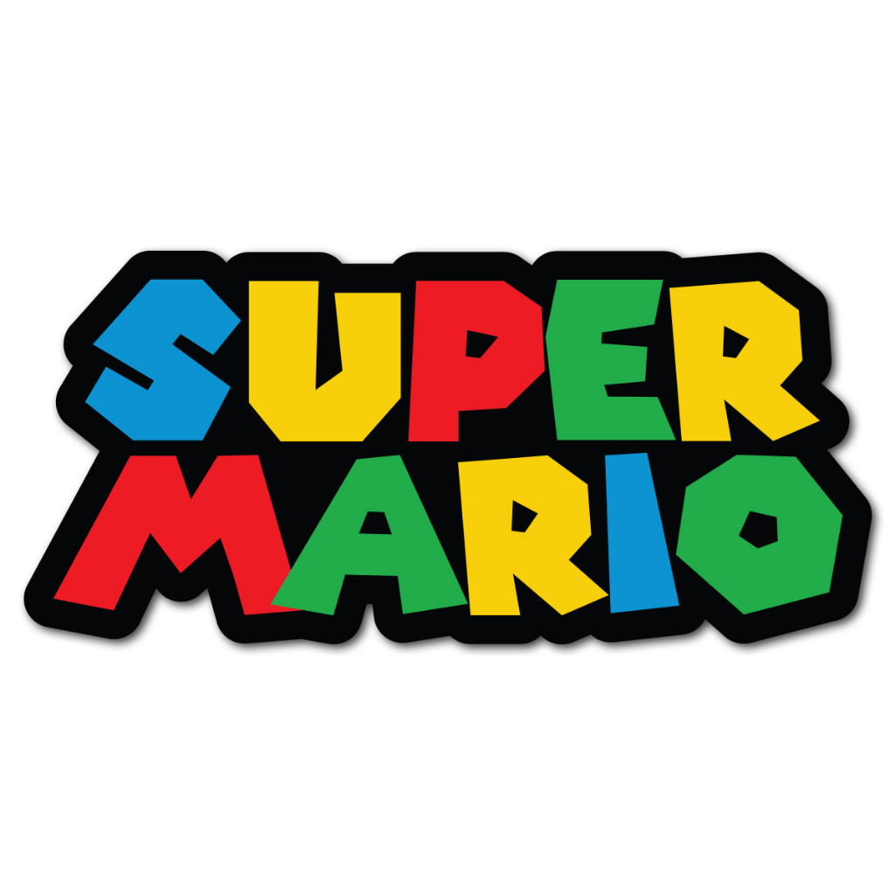
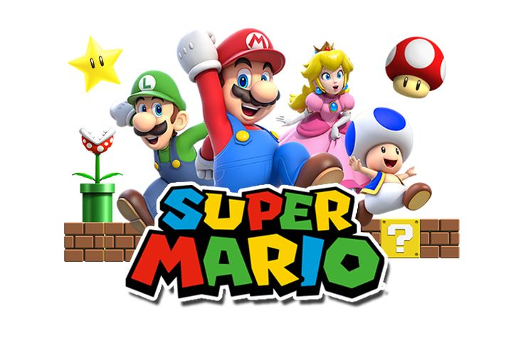
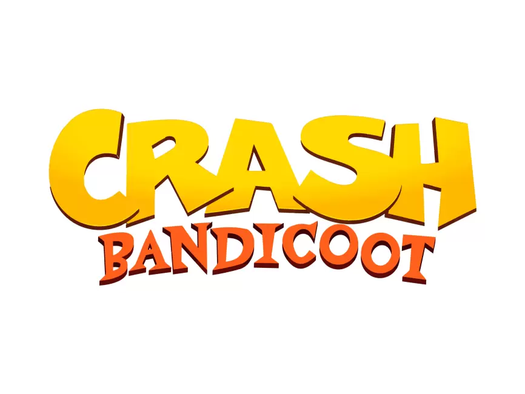
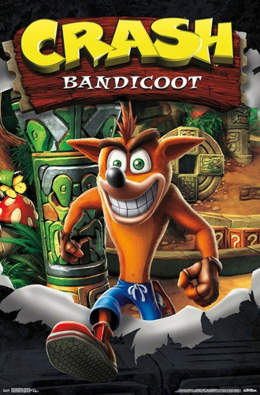
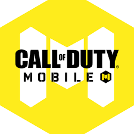
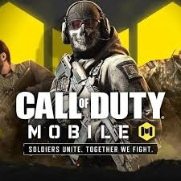
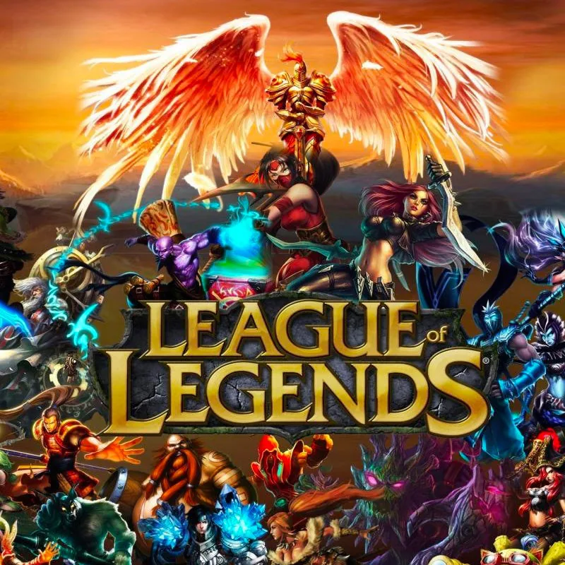
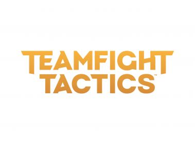
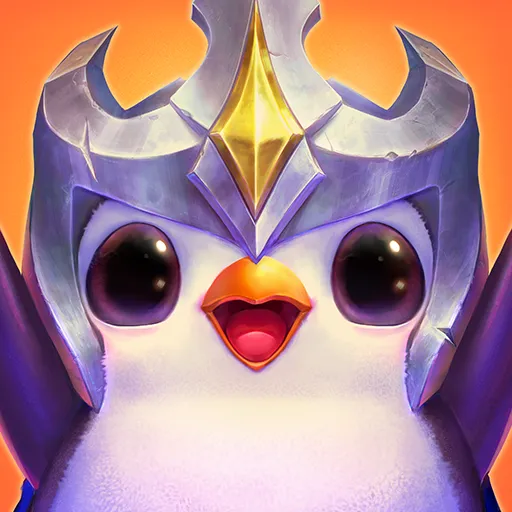

Porto-alegrense , amante de games , animes e tecnologia. Que quando sobra um tempinho faz live na roxinha ,principalmente jogando de Yuumi .
| Nome | Descrição | Game play |
|---|---|---|
|  | Super Mario é uma série de jogos eletrônicos de plataforma, criada pela Nintendo, baseada e estrelada pelo encanador fictício Mario. Alternativamente chamada de série Super Mario Bros. ou simplesmente série Mario, é a série central da ampla franquia Mario. |  |
|  | Crash Bandicoot é um jogo eletrônico de plataforma de 1996, desenvolvido pela Naughty Dog e publicado pela Sony Computer Entertainment para o PlayStation. O jogador controla Crash, um bandicoot geneticamente aprimorado criado pelo cientista louco Doutor Neo Cortex. |  |
|  | Call of Duty: Mobile é um jogo eletrônico free-to-play de tiro em primeira pessoa desenvolvido pela Tencent Games e publicado pela Activision para Android e iOS. |  |
| League of Legends é um jogo eletrônico do gênero multiplayer online battle arena desenvolvido e publicado pela Riot Games. Foi lançado em outubro de 2009 para Microsoft Windows e em março de 2013 para macOS |  | |
|  | O Teamfight Tactics é um jogo gratuito de estratégia e auto chess desenvolvido e publicado pela Riot Games. O jogo se passa no universo de League of Legends e é baseado no Dota Auto Chess, onde os jogadores competem online contra outros sete adversários, construindo uma equipe para ser a última em pé |  |